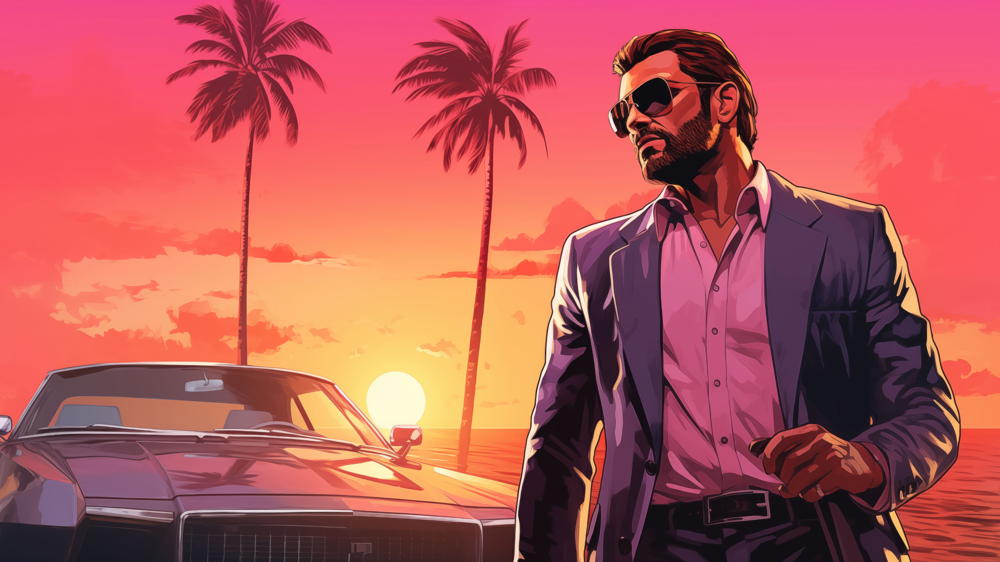

Historia y personajes
Jason y Lucia
Grand Theft Auto VI tendrá como protagonistas a Jason Duval y Lucia Caminos, dos personajes que unirán sus destinos en una historia marcada por el crimen y la supervivencia. A lo largo de la aventura, ambos tendrán que afrontar diferentes situaciones que pondrán a prueba su confianza y lealtad, mientras se adentran en un mundo lleno de peligros, traiciones y oportunidades. Su relación será uno de los elementos centrales de la trama, en la que tendrán que luchar juntos para conseguir sus objetivos y sobrevivir en un entorno dominado por la delincuencia y la ambición.
El mapa
La aventura de Grand Theft Auto VI se desarrollará en Leonida,
un estado ficticio inspirado en Florida (Estados Unidos). Este
territorio albergará diferentes entornos y paisajes, siendo uno
de sus lugares más destacados la emblemática ciudad de Vice City,
que regresa como uno de los escenarios principales de la saga.

Información del juego
Lanzamiento
El lanzamiento de Grand Theft Auto VI estaba previsto para el 19 de noviembre de 2026, una fecha que prometía convertirse en uno de los acontecimientos más importantes de la industria de los videojuegos. Esta nueva entrega de la emblemática saga de Rockstar Games pondría fin a años de espera por parte de millones de seguidores, ofreciendo una experiencia completamente renovada. Con una nueva trama, personajes inéditos y un mundo abierto repleto de posibilidades, GTA VI representa uno de los regresos más esperados a uno de los universos más icónicos del entretenimiento.
Desarrolladora
La empresa responsable del desarrollo de Grand Theft Auto VI
es Rockstar Games, una reconocida compañía de videojuegos
conocida internacionalmente por crear grandes títulos de
mundo abierto. Entre sus sagas más populares destacan Grand
Theft Auto y Red Dead Redemption. Con esta nueva entrega,
Rockstar Games busca continuar el legado de la franquicia
y ofrecer una experiencia que mantenga la esencia característica
de sus anteriores videojuegos.
